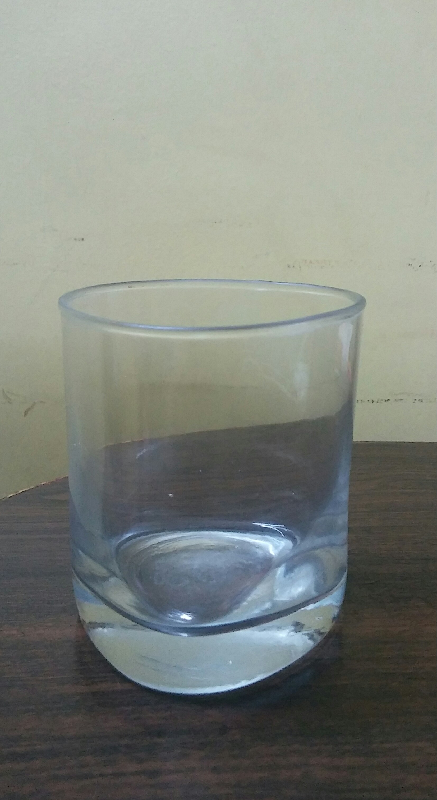
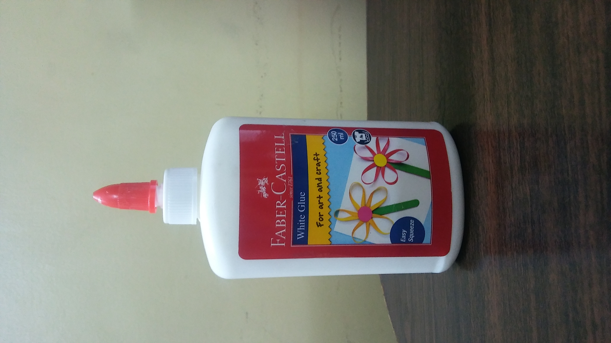
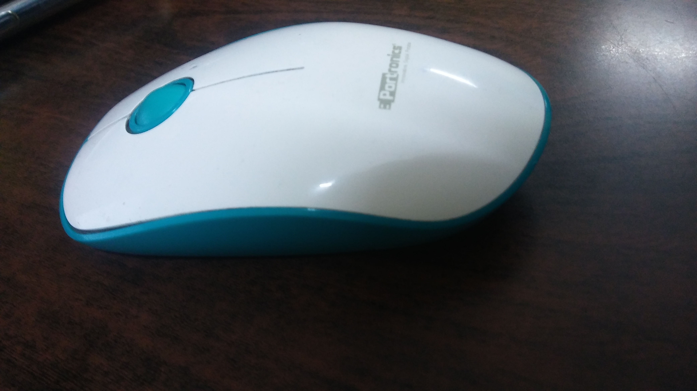

Test Image -
Output On Microsoft Azure - A Group Of Colorful Flowers
Output On Mobilenet Model - Pillow
Result -
Mobilenet Model Is More Accurate
Test Image -
Output On Microsoft Azure - A Glass Of Water
Output On Mobilenet Model - Water Jug
Result -
Microsoft Azure Is More Accurate
Test Image -
Output On Microsoft Azure - Calendar
Output On Mobilenet Model - Nipple
Result -
Mobilenet Model Is More Accurate As The Top Of The Glue does look like a Nipple
Test Image -
Output On Microsoft Azure - A Close Up Of A Car
Output On Mobilenet Model - Phone
Result -
Mobilenet Model Is Model Accurate
Test Image -
Output On Microsoft Azure - A Computer Mouse On A Table
Output On Mobilenet Model - Mouse, ComputerMouse
Result -
Microsoft Azure Is More Accurate